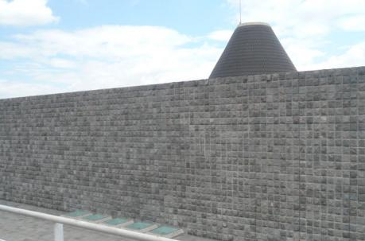
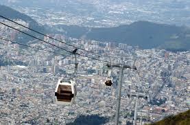
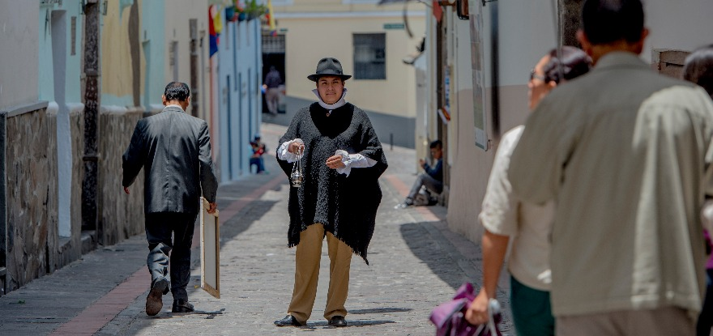
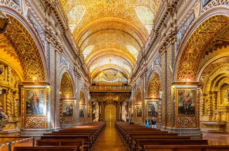

El Panecillo
Destaca la conocida Virgen de Quito, dentro de la estructura hay un museo que se puede visitar
para conocer la historia de cómo fue construida la figura religiosa.
El Panecillo

Museo Capilla del Hombre
El museo ofrece al turista la exposición de piezas arqueológicas precolombinas, colecciones de
objetos de la época colonial y, sobre todo,
la muestra completa de las obras del artista plástico
Museo Capilla del Hombre
Plaza de la Independencia
También llamada Plaza Grande es el lugar histórico referente de la capital, pues a sus alrededores
se ubican el Palacio de Carondelet, la Catedral Metropolitana, el Palacio arzobispal y el Palacio Municipal.
Plaza de la Independencia

Teleférico
Es el más alto de Sudamérica. Parte desde los 2,950 msnm hasta llegar a los 4,050 msnm: la cúspide de
Cruz Loma, aledaña al volcán Pichincha.
Teleférico
Ciudad Mitad del Mundo
Este atractivo turístico invita a conocer la cultura y ancestralidad del Ecuador con ofertas que van desde
la gastronomía hasta los ritos tradicionales de las principales culturas que habitan el país.
Ciudad Mitad del Mundo
Parque La Carolina
El parque se caracteriza por brindar espacios verdes para todo tipo de actividades como el atletismo,
el ciclismo, la caminata y los deportes extremos
Parque La Carolina
La Basílica
En las torres hay una vista privilegiada del Panecillo o si prefiere, puede caminar por sus clásica
infraestructura y por qué no tomarse unos 'selfies' para el recuerdo.
La Basílica

La Ronda
UEste es uno de los sitios que emanan festejo, no solo por ser una de las zonas más antiguas del casco colonial,
sino por haber sido cuna de pintores, escritores y poetas de los años 30.
La Ronda

Iglesia de la Compañía de Jesús de Quito
El templo es considerado una joya del barroco iberoamericano. La distinción se debe, entre otras cosas,
por su fachada construida toda de piedra gris de origen volcánico.
Iglesia de la Compañía de Jesús de Quito